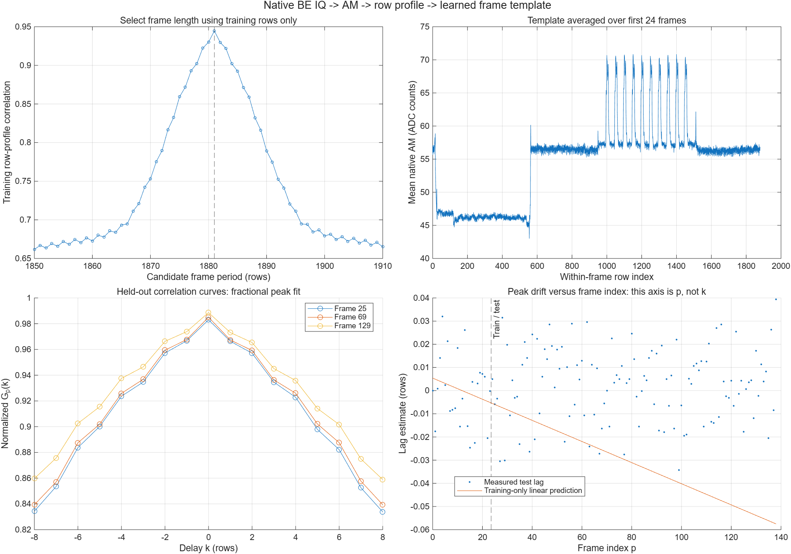
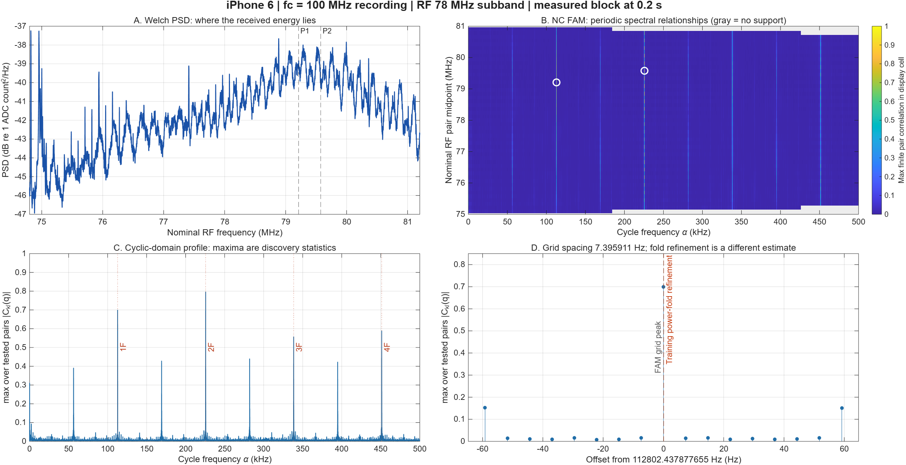
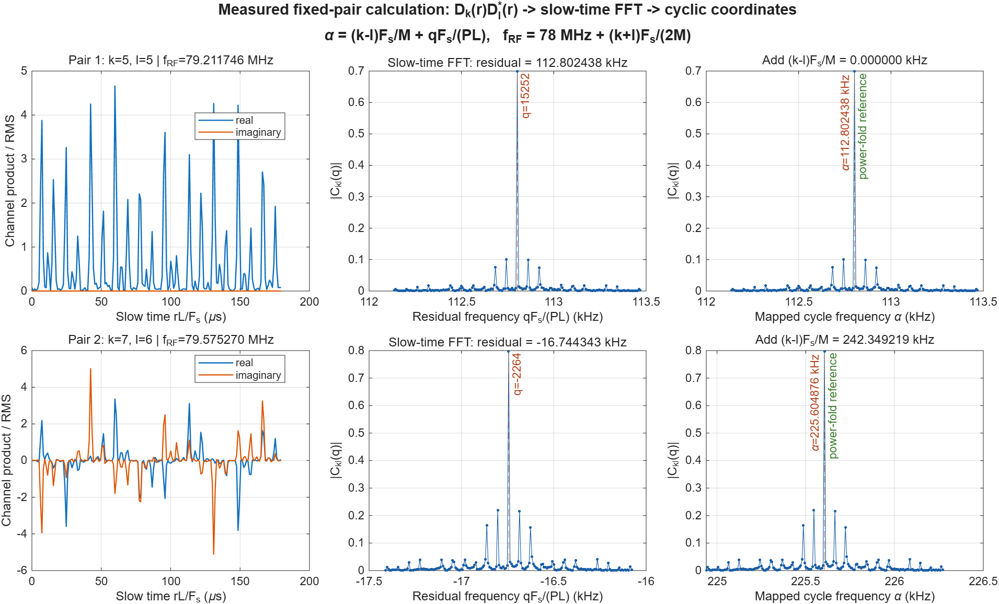
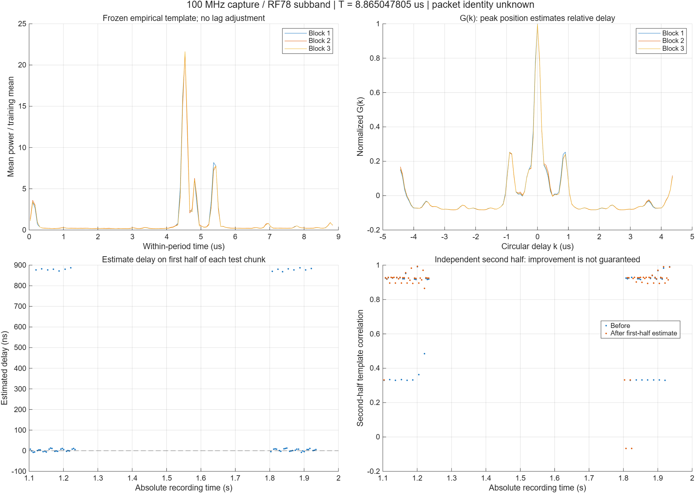
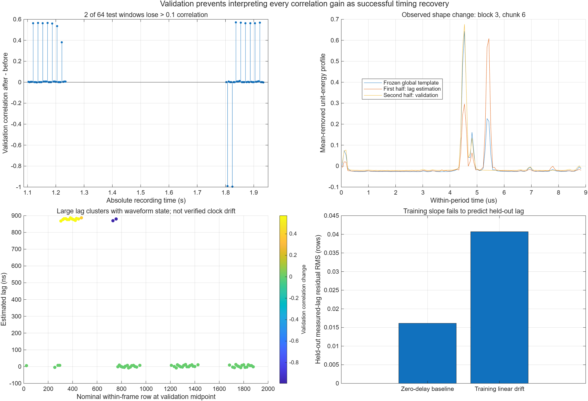
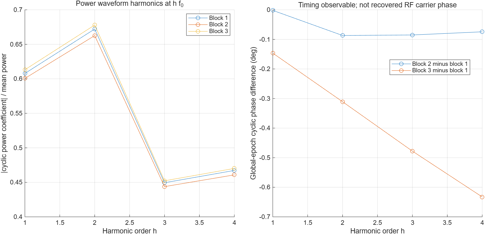
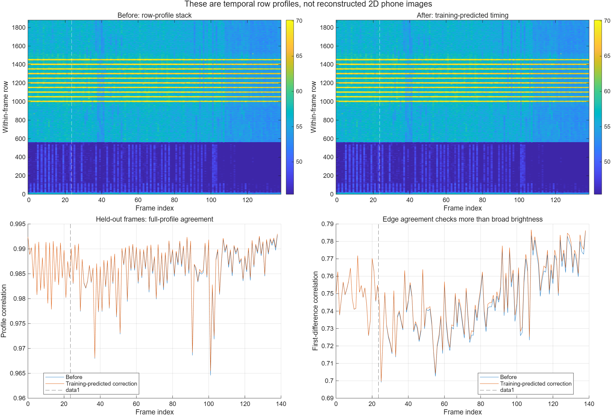

G(k), 학습 템플릿과 FAM
iPhone 6 · 100 MHz 녹음본 · MATLAB R2026b · 2026-10-27
반복 구조는 확인했고 템플릿을 적용했습니다.단일 템플릿은 파형 상태가 바뀔 때 오정렬을 만들 수 있습니다. 학습 구간의 선형 drift도 별도 검증을 통과하지 못해 후속 시간축 보정으로 채택하지 않았습니다.
8.865048 μs짧은 반복 주기
1881 rows학습 ACF 프레임 후보
56 / 64짧은 검증 상관 증가
2 / 64큰 오정렬 실패
MATLAB Live Script · 수식 포함 한국어 보고서 · 계산 수치 · 실패 검증 수치
계산한 세 가지 관계
Gp(k) = Σ r̃[n]* ṽp[n+k] / (‖r̃‖ ‖ṽp,k‖)
Zkl[q] = Σr g[r] Dk[r] Dl[r]* exp(−j2πqr/P)
f = (fk+fl)/2, α = fk−fl + qFs/(PL)
M=32, L=8, P=131072, 분석 Fs=7.755175 MS/s. 채널 간격은 242.349219 kHz이며 alpha 격자는 7.395911 Hz입니다.
G(k)의 두 축
좌하단은 지연 k를 바꾸며 계산한 상관함수입니다. 우하단은 프레임 p에 따라 추적한 피크 위치입니다. 약한 학습 기울기를 전체 구간으로 외삽하면 검증 지연을 잘 예측하지 못합니다.

FAM: RF와 반복주파수
좌상단 PSD는 에너지의 RF 위치입니다. 우상단 FAM의 가로축은 alpha, 세로축은 nominal RF pair midpoint입니다. 좌하단은 채널쌍의 최대 상관을 취한 CDP입니다. 색과 높이는 SNR 또는 복호 성공률이 아닙니다.

두 번의 FFT와 좌표 변환
짧은 FFT 채널 곱에 slow-time FFT를 적용합니다. alpha=(k-l)Fs/M+qFs/(PL). k=l=5에서도 q=15252라서 112.802438 kHz가 나옵니다.

학습 템플릿 적용
첫 블록에서 만든 power template를 1.1초 및 1.8초 블록에 고정 적용했습니다. 각 chunk 앞 절반에서 추정한 지연을 뒤 절반에서 검증합니다.

실패 사례가 의미하는 것
64구간 중 56개에서 상관이 증가하고 8개에서 감소했습니다. 두 구간은 약 0.99의 큰 감소가 있었습니다. 다른 펄스를 선택하는 약 0.88 us 점프를 실제 clock drift로 해석하면 안 됩니다. 프레임 drift 외삽의 검증 RMS도 악화됐습니다.

순환위상과 RF 위상 구분
공통 원본 시각을 기준으로 h f0에서 power의 복소 Fourier 계수를 구한 것입니다. 이 위상은 반복 파형의 시간 위치와 관련되며 RF carrier 위상 복원이나 CFO 보정 결과가 아닙니다.

프레임 프로파일의 보정 전후
이 그림의 한 열은 한 프레임의 줄별 AM입니다. 스마트폰의 가로 픽셀을 복원한 화면은 아닙니다. 보간 후 상관의 작은 증가는 실제 clock correction의 증거로 충분하지 않습니다.

범위와 재현
big-endian int16 IQ, 사용자 지정 Fs=124.0828 MS/s. 단일 녹음의 분리 구간을 검증했으며 독립 재측정이 아닙니다. known DSI packet 또는 SoT 템플릿은 아직 아닙니다. 수신 RF의 절대 부호는 이전 분석의 I−jQ 가정을 유지합니다.
Spooner FAM 설명